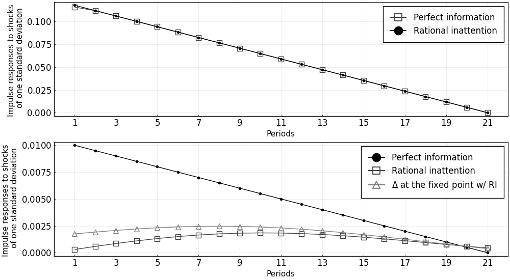
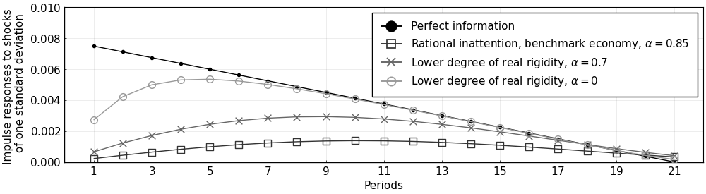
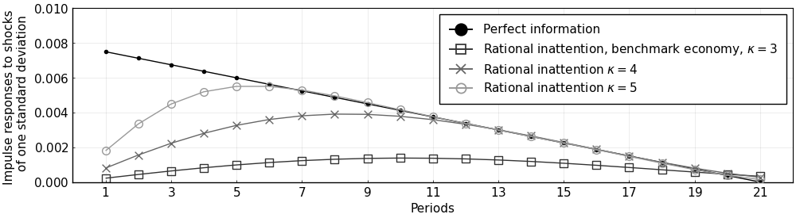

Replication of Mackowiak and Wiederholt (2009)
This example replicates Mackowiak and Wiederholt (2009) (henceforth MW) using the DRIPs package.
 to run and modify the following code (no software is needed on the local machine).
to run and modify the following code (no software is needed on the local machine).
See Afrouzi and Yang (2020) for background on the theory.
Contents
Setup
The problem in MW is
where
Mapping the Problem to a DRIP
There are a few ways of translating the problem above to a Drip structure; however, the most efficient way, due to the independence assumption, is to write it as the sum of two DRIPs: one that solves the attention problem for the idiosyncratic shock, and one that solves the attention problem for the aggregate shock which also has endogenous feedback.
Moreover, since the problem above has a fixed capacity, instead of a fixed cost of attention ($\omega$) as in DRIPs pacakge, we need to iterate over $\omega$'s to find the one that corresponds with $\kappa$.
Initialization
Include the package::
using DRIPs;
nothing #hideAssign parameters:
ρ = 0.95;
σq = 0.01;
σz = 11.8*σq;
κ = 3;
ξ = 1;
α = 1 - 0.15;
nothing #hidePrimitives of Drip:
using LinearAlgebra;
L = 21; # length of trunction
A = [zeros(1,L);[Matrix(I,L-1,L-1);zeros(1,L-1)]']; # MW truncate the state space with linear irfs of length 20
Qq = zeros(L,1); Qq[1]=σq;
Qz = zeros(L,1); Qz[1]=σz;
H = zeros(L,1); H[1:21] = Array(1:-1/20:0);
nothing #hideFunctions
We start with a function that solves the aggregate problem with feedback for a given $\omega$.
Solving for the fixed point given $\omega$
function agg_drip(ω,A,Qq, #primitives of drip except for H because H is endogenous
α, #strategic complementarity
H; #state space rep. of q
β = 1, #optional: discount factor, MW's parameterization implies β = 1
H0 = H, #optional: initial guess for HΔ (H is the true solution when α=0)
maxit = 10000, #optional: max number of iterations for GE code
tol = 1e-4, #optional: tolerance for iterations
w = 1) #optional: update weight for RI
errmin= 1;
err = 1;
iter = 0;
L = length(H);
while (err > tol) & (iter < maxit)
if iter == 0
global agg = Drip(ω,β,A,Qq,H0;w = w);
else
global agg = Drip(ω,β,A,Qq,H0;Ω0 = agg.ss.Ω , Σ0 = agg.ss.Σ_1,w = w);
end
XFUN(jj) = ((I-agg.ss.K*agg.ss.Y')*agg.A)^jj * (agg.ss.K*agg.ss.Y') * (agg.A')^jj
X = DRIPs.infinitesum(XFUN; maxit=200, start = 0); #E[x⃗]=X×x⃗
XpFUN(jj) = α^jj * X^(jj)
Xp = DRIPs.infinitesum(XpFUN; maxit=200, start = 0);
H1 = (1-α)*Xp'*H;
err= 0.5*norm(H1-H0,2)/norm(H0)+0.5*err;
if DRIPs.capacity(agg) < 1e-2 # perturb the initial guess if solution is the zero capacity one
H0 = H0+rand(L).*(H-H0);
else # store the solution if it has positive capacity
H0 = H1;
if err < errmin
global aggmin = agg;
errmin = err;
end
end
iter += 1;
end
return(aggmin, errmin)
end;
nothing #hideNow we need a function that iterates over $\omega$'s to find the one that corresponds to a given capacity for the MW problem.
Solving for the optimal $\omega$
using Printf;
function MW(κ,α,A,Qq,Qz,Hq,Hz; #primitives of MW problem
ω = σq^2, #optional: initial guess for ω
tol = 1e-3, #optional: tolerance for κ
maxit = 10000) #optional: max iterations
ωs = [ω; 2*ω];
caps = [];
iter = 0;
err = 1;
it = 0;
while (err > tol) & (iter < maxit)
agg, errtemp = agg_drip(ω,A,Qq,α,H; H0 = rand(L),maxit=20,w=0.95);
idi = Drip(ω,1,A,Qz,H,w = 0.9) ;
cap = DRIPs.capacity(agg, unit = "bit") + DRIPs.capacity(idi, unit = "bit");
x = ω/σq^2;
@printf("ω = %.2fσq² for κ = %.2f \n",x,cap)
push!(caps,cap);
if it == 0
ω = ωs[end];
else
slope = (caps[end]-caps[end-1])/(ωs[end]-ωs[end-1]);
ω = ω + (κ-caps[end])/slope;
push!(ωs,ω);
end
err = abs(caps[end] - κ)/κ;
it += 1;
end
return(ω);
end;
nothing #hideFigures
Start with the benchmark calibration:
Benchmark Economy
ω = MW(3,α,A,Qq,Qz,H,H);
agg, err = agg_drip(ω,A,Qq,α,H; H0 = rand(L), maxit = 500, w = 0.95);
idi = Drip(ω,1,A,Qz,H,w = 0.9);
@printf("Agg. Capacity = %.2f bits, Idio. Capacity = %.2f bits",DRIPs.capacity(agg),DRIPs.capacity(idi));
nothing #hideω = 1.00σq² for κ = 3.67
ω = 2.00σq² for κ = 3.10
ω = 2.17σq² for κ = 3.03
ω = 2.27σq² for κ = 2.98
ω = 2.23σq² for κ = 3.00
Agg. Capacity = 0.12 bits, Idio. Capacity = 2.90 bitsPlot IRFs
iirfs = irfs(idi, T = L)
airfs = irfs(agg, T = L)
using Plots, LaTeXStrings; pyplot();
p1 = plot([iirfs.a[1,1,:],σz*H],
label = ["Perfect information" "Rational inattention"],
marker = [:square :circle],
color = [:gray25 :black],
markercolor = [false :black],
markerstrokecolor = [:gray25 :black],
markersize = [7 3],
xlabel = "Periods",
ylabel = "Impulse responses to shocks \n of one standard deviation");
p2 = plot([σq*H,airfs.a[1,1,1:end],σq*agg.H],
label = ["Perfect information" "Rational inattention" L"$\Delta$ at the fixed point w/ RI"],
marker = [:circle :square :utriangle],
color = [:black :gray25 :gray50],
markercolor = [:black false false] ,
markerstrokecolor = [:black :gray25 :gray50],
markersize = [3 7 7],
xlabel = "Periods",
ylabel = "Impulse responses to shocks \n of one standard deviation")
plot(p1,p2,
layout = (2,1),
xlim = (0,L+1),
lw = 1,
legend = :topright,
legendfont = font(12),
tickfont = font(12),
size = (1000,550),
xticks = 1:2:21,
framestyle = :box)
Other values of real rigidity ($\alpha$)
For $\alpha = 0.7$:
ω_α7 = MW(3,0.7,A,Qq,Qz,H,H);
agg_α7, err = agg_drip(ω_α7,A,Qq,0.7,H; H0 = rand(L), maxit = 100, w = 0.95);
idi_α7 = Drip(ω_α7,1,A,Qz,H,w = 0.9);
@printf("Agg. Capacity = %.2f bits, Idio. Capacity = %.2f bits",
DRIPs.capacity(agg_α7),DRIPs.capacity(idi_α7));
nothing #hideω = 1.00σq² for κ = 3.83
ω = 2.00σq² for κ = 3.19
ω = 2.30σq² for κ = 3.06
ω = 2.46σq² for κ = 3.01
ω = 2.47σq² for κ = 3.00
Agg. Capacity = 0.17 bits, Idio. Capacity = 2.83 bitsFor $\alpha = 0$:
ω_α0 = MW(3,0,A,Qq,Qz,H,H);
agg_α0, err = agg_drip(ω_α0,A,Qq,0,H; H0 = rand(L), maxit = 100, w = 0.95);
idi_α0 = Drip(ω_α0,1,A,Qz,H,w = 0.9);
@printf("Agg. Capacity = %.2f bits, Idio. Capacity = %.2f bits",
DRIPs.capacity(agg_α0),DRIPs.capacity(idi_α0));
nothing #hideω = 1.00σq² for κ = 4.06
ω = 2.00σq² for κ = 3.39
ω = 2.59σq² for κ = 3.16
ω = 2.99σq² for κ = 3.03
ω = 3.08σq² for κ = 3.00
Agg. Capacity = 0.32 bits, Idio. Capacity = 2.68 bitsPlot IRFs:
airfs_α7 = irfs(agg_α7, T = L);
airfs_α0 = irfs(agg_α0, T = L);
plot(1:L,0.75*[σq*H,airfs.a[1,1,:],airfs_α7.a[1,1,:],airfs_α0.a[1,1,:]],
label = ["Perfect information" L"Rational inattention, benchmark economy, $\alpha = 0.85$" L"Lower degree of real rigidity, $\alpha = 0.7$" L"Lower degree of real rigidity, $\alpha = 0$"],
marker = [:circle :square :x :circle],
color = [:black :gray20 :gray40 :gray60],
markercolor = [:black false :gray40 false],
markerstrokecolor = [:black :gray20 :gray40 :gray60],
markersize = [3 7 7 7],
xlim = (0,L+1),
lw = 1,
xticks = 1:2:21,
legend = :topright,
legendfont = font(11),
tickfont = font(11),
size = (1000,275),
ylim = (0,σq),
framestyle = :box,
xlabel = "Periods",
ylabel = "Impulse responses to shocks \n of one standard deviation")
Other values of information capacity ($\kappa$)
For $\kappa=4$:
ω_κ4 = MW(4,α,A,Qq,Qz,H,H);
agg_κ4, err = agg_drip(ω_κ4,A,Qq,α,H; H0 = rand(L), maxit = 500, w = 0.95)
idi_κ4 = Drip(ω_κ4,1,A,Qz,H,w = 0.9)
@printf("Agg. Capacity = %.2f bits, Idio. Capacity = %.2f bits",
DRIPs.capacity(agg_κ4),DRIPs.capacity(idi_κ4));
nothing #hideω = 1.00σq² for κ = 3.66
ω = 2.00σq² for κ = 3.09
ω = 0.41σq² for κ = 4.52
ω = 0.99σq² for κ = 3.68
ω = 0.77σq² for κ = 3.92
ω = 0.70σq² for κ = 4.01
ω = 0.71σq² for κ = 4.00
Agg. Capacity = 0.34 bits, Idio. Capacity = 3.66 bitsFor $\kappa=5$:
ω_κ5 = MW(5,α,A,Qq,Qz,H,H; ω = 0.1*σq^2);
agg_κ5, err = agg_drip(ω_κ5,A,Qq,α,H; H0 = rand(L), maxit = 500, w = 0.95)
idi_κ5 = Drip(ω_κ5,1,A,Qz,H,w = 0.9)
@printf("Agg. Capacity = %.2f bits, Idio. Capacity = %.2f bits",
DRIPs.capacity(agg_κ5),DRIPs.capacity(idi_κ5));
nothing #hideω = 0.10σq² for κ = 6.14
ω = 0.20σq² for κ = 5.29
ω = 0.23σq² for κ = 5.12
ω = 0.26σq² for κ = 5.01
ω = 0.26σq² for κ = 5.00
Agg. Capacity = 0.70 bits, Idio. Capacity = 4.30 bitsPlot IRFs:
airfs_κ4 = irfs(agg_κ4, T = L);
airfs_κ5 = irfs(agg_κ5, T = L);
plot(1:L,0.75*[σq*H,airfs.a[1,1,:],airfs_κ4.a[1,1,:],airfs_κ5.a[1,1,:]],
label = ["Perfect information" L"Rational inattention, benchmark economy, $\kappa = 3$" L"Rational inattention $\kappa = 4$" L"Rational inattention $\kappa = 5$"],
marker = [:circle :square :x :circle],
color = [:black :gray20 :gray40 :gray60],
markercolor = [:black false :gray40 false],
markerstrokecolor = [:black :gray20 :gray40 :gray60],
markersize = [3 7 7 7],
xlim = (0,L+1),
lw = 1,
xticks = 1:2:21,
legend = :topright,
legendfont = font(11),
tickfont = font(11),
size = (1000,275),
ylim = (0,σq),
framestyle = :box,
xlabel = "Periods",
ylabel = "Impulse responses to shocks \n of one standard deviation")
Measure Performance/Speed
Performance of the code for aggregate problem with feedback
For random values of $\omega$ and benchmark values of other parameters:
using BenchmarkTools;
@benchmark agg_drip(ω,A,Qq,α,H; H0 = rand(L), maxit = 100, w = 0.95) setup = (ω = σq^2*5*rand())BenchmarkTools.Trial:
memory estimate: 431.88 MiB
allocs estimate: 197363
--------------
minimum time: 532.473 ms (6.11% GC)
median time: 561.720 ms (6.51% GC)
mean time: 561.793 ms (6.35% GC)
maximum time: 596.280 ms (6.15% GC)
--------------
samples: 9
evals/sample: 1For $\alpha=0.7$ and random values of $\omega$:
@benchmark agg_drip(ω_α7,A,Qq,0.7,H; H0 = rand(L), maxit = 100, w = 0.95) setup = (ω = σq^2*5*rand())BenchmarkTools.Trial:
memory estimate: 59.14 MiB
allocs estimate: 25584
--------------
minimum time: 61.127 ms (6.65% GC)
median time: 88.009 ms (9.27% GC)
mean time: 84.948 ms (7.36% GC)
maximum time: 108.039 ms (7.57% GC)
--------------
samples: 59
evals/sample: 1Performance of the code for idiosyncratic problem
@benchmark Drip(ω,1,A,Qz,H,w = 0.9) setup = (ω = σq^2*5*rand())BenchmarkTools.Trial:
memory estimate: 12.68 MiB
allocs estimate: 6192
--------------
minimum time: 17.451 ms (0.00% GC)
median time: 18.556 ms (0.00% GC)
mean time: 19.451 ms (4.91% GC)
maximum time: 23.638 ms (17.43% GC)
--------------
samples: 257
evals/sample: 1This page was generated using Literate.jl.